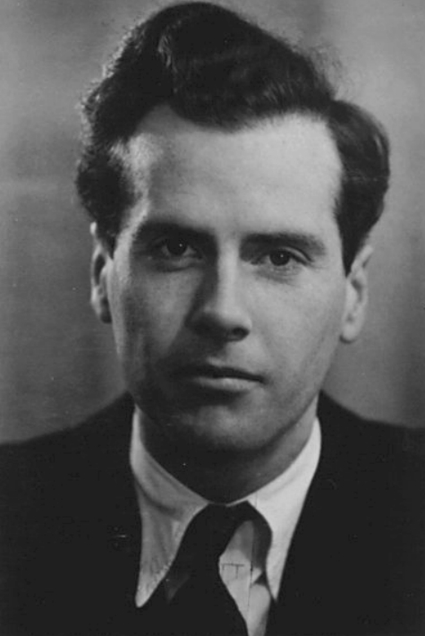

Herbert Marshall McLuhan
Herbert Marshall McLuhan[a] CC (1911–1980) was a Canadian philosopher. His work is one of the cornerstones of the study of media theory.[7][8] Born in Edmonton, Alberta, McLuhan studied at the University of Manitoba and the University of Cambridge. He began his teaching career as a professor of English at several universities in the US and Canada before moving to the University of Toronto in 1946, where he remained for the rest of his life. McLuhan coined the expression "the medium is the message" and the term global village, and predicted the World Wide Web almost 30 years before it was invented.[9] He was a fixture in media discourse in the late 1960s, though his influence began to wane in the early 1970s.[10] In the years after his death, he continued to be a controversial figure in academic circles.[11] With the arrival of the Internet and the World Wide Web, interest was renewed in his work and perspective.[12][13][14]
"The medium is the message" is a phrase coined by the Canadian philosopher Marshall McLuhan and introduced in McLuhan's book Understanding Media: The Extensions of Man, published in 1964.[1] McLuhan proposes that a medium itself, not the content it carries, should be the focus of study. He said that a medium affects the society in which it plays a role not only by the content delivered over the medium, but also by the characteristics of the medium itself.
McLuhan was born on July 21, 1911, in Edmonton, Alberta, to Elsie Naomi (née Hall) and Herbert Ernest McLuhan, both born in Canada. His brother Maurice was born two years later. "Marshall" was his maternal grandmother's surname. His mother was a Baptist school teacher who later became an actress; his father was a Methodist and had a real estate business in Edmonton. That business failed when World War I broke out, and McLuhan's father enlisted in the Canadian Army. After a year of service, he contracted influenza and remained in Canada, away from the front lines. After his discharge from the army in 1915, the McLuhan family moved to Winnipeg, Manitoba, where Marshall grew up and went to school, attending Kelvin Technical School before enrolling in the University of Manitoba in 1928.[15]